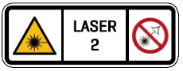
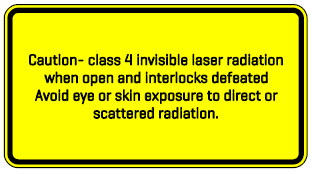
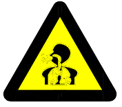
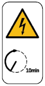
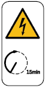
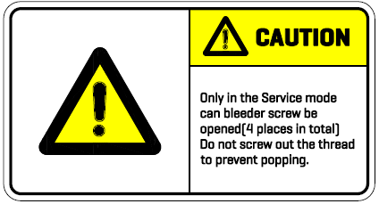
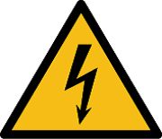

Measures to be taken by the manufacturer
7.1 Danger zones and safeguarding
The danger zone of the machine is protected by guards. The machine may only be operated with an active guard.
Acknowledge operation
The pallet changer is only possible to move when the ACKNOWLEDGE button is pressed and held down. Once the ACKNOWLEDGE button is released, movements are stopped immediately. Before changing the pallet, operator must make sure that nobody is in the danger zone.
In case of any person entering the danger zone, release the ACKNOWLEDGE button immediately.
Safety light barrier
The standard scope of delivery of the machine includes a photoelectric protection device for securing the danger zone. The beams of the safety light barrier run 300mm and 1300mm above the floor. Axes of the beams keep a distance of 40mm.
In the normal mode, the danger zone of the machine is secured with the safety light barrier.
An interrupted light beam triggers a Feed Hold during operation: All movements of the machine are automatically stopped.
Safety cabin
In order to protect against laser radiation, the machine is equipped with a closed safety cabin with protective interlock devices (e.g. safety doors, protective doors, maintenance openings). The protective interlock devices are monitored by the control.
The laser processing is only possible when the guard is closed.
The safety cabin is made of steel sheet. The viewing area is fitted with laser protective windows.
Hood for laser device
Lasers (beam generators) are covered with hoods. The hoods are monitored by safety switches and should only be opened with the appropriate tools. Only the technical service engineers or appropriately trained personnel are allowed to open the hoods.
LOTO concept(lock-out/tag-out concept)
The lock-out/tag-out principle is a safety procedure that specifically switches off the laser beam, electric and pneumatic energy and prevents travel motion.
The LOTO principle contains actions from the manufacturer for the LOTO points and the locking and marking of the LOTO points by the operator.
| LOTO point | Action |
|---|---|
Main switch |
Turn the MAIN SWITCH off and use a padlock or lockout lock to secure it from being switched on again. |
Machine door |
Attach a padlock or lockout lock to the corresponding opening in the machine frame to prevent others from closing the door. |
Main switch
The main switch is used to switch the machine on and off. The main switch can be secured with a padlock against being switched back on again.
The main switch has two switch positions:
| Switch position “0” | The machine is switched off and the voltage supply of the machine is interrupted. |
|---|---|
Switch position “1” |
The machine is switched on. |
Main switch of the laser device
The main switch is used to connect and disconnect the laser from the power supply. The main switch can be secured with a padlock against being switched back on again.
The main switch has two switch positions:
| Switch position “Off” | The laser device is switched off. |
|---|---|
Switch position “On” |
The laser device is switched on. |
MERGENCY STOP push-button
EMERGENCY STOP has the following effect:
The laser beam is switched off. No beam enable for the light path.
The gas supply of the processing gas is interrupted.
All axis motions stop.
STO function is activated on all drives.
The process cooler and the dust compact extractor are switched off.
FEED HOLD
A FEED HOLD leads to the following:
All axes stop motion.
The laser beam is switched off. No beam enable for the light path.
Operation-Deactivation Key switch on the laser device
The key switch is used to locked the laser device to prevent unauthorized operation of the laser device.
| Switch position “0” or “Off” (Lock symbol) | Laser beam is disabled at this position. The key can be removed. |
|---|---|
Switch position “1” or “On” (Unlock symbol) |
Laser beam is enabled ignite at this position. |
Suction system in the work area
The compact dust extractor offered with the machine is designed such that the emitted aerosols and dusts in the work area can be suctioned and efficiently separated when the machine is used as intended.
Laser warning indicator on the laser device
The laser warning indicator is a safety equipment and monitored by the control system. If the laser warning indicator is defective, an error message will be displayed and laser beam will be disabled. The laser warning indicator must be exchanged.
Machine signal lamp
The machine signal lamp visualizes the machine’s operating status (operation, error or idle state).
7.2 Safety relevant signs on the machine
| Safety-relevant signs on the machine | Meaning |
|---|---|
 |
Class 2 laser radiation. Avoid eye exposure to direct or scattered radiation. |
 |
Caution- class 4 Invisible laser radiation When open and interlocks defeated. Avoid eye or skin exposure to direct or scattered radiation. |
Please read the operator’s manual before operation and maintenance work. |
|
Two or more people operating the machine at the same time are strictly prohibited. |
|
No trampling. |
|
No touching. |
|
 |
Harmful gases, aerosols or dust will be generated during processing. Use suitable filter system. |
Risk of injury from firel Keep a hand-held fire extingulsher ready for metal fires（fire class D） |
|
Beware of falling |
|
 |
Discharge time﹥10min |
 |
Discharge time﹥15min |
 |
Only in the service mode can bleeder screw be opened. |
Warning of laser beam. |
|
 |
Warning of electrical voltage. |
Grounding symbol. |